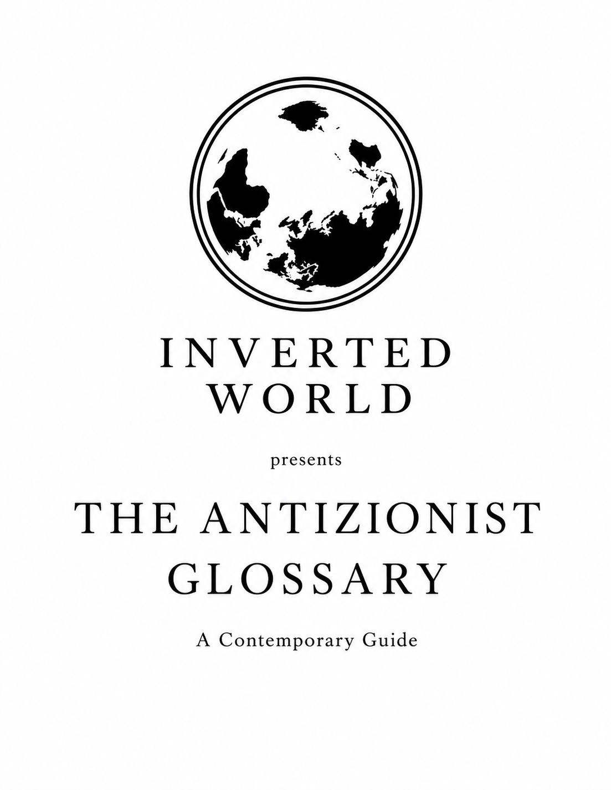

Inverted World presents
The Antizionist Glossary
A Contemporary Guide
A professional glossary of modern antizionist vocabulary: its usage, implications, lineage, functions, and sources.

Project
Language, history, and the terms that shape public judgment.
This site is designed as the web home for The Antizionist Glossary. Each term receives its own page, with an entry in the main column and Recommended Reading and References in a dedicated sidebar.
The first version is built as a static HTML site: free to host, easy to edit, and simple to expand as the glossary grows.
Endorsement
“In this useful and timely glossary of modern anti-Zionist vocabulary, Mr. Jones has created something we all need: a detailed guide explaining the history, nuances, and functions of this movement's vernacular.”Natan Sharansky